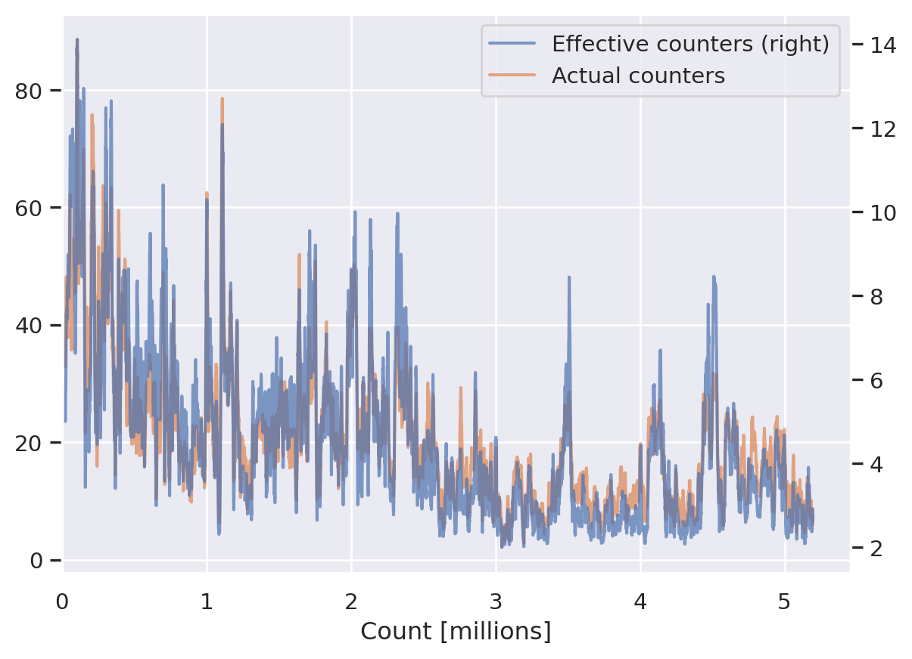

I’ve previously described r/counting as a collaborative incremental game, and that for me sums up the essence of counting fairly well. A natural question to ask about the game is how many people have played over the years
We’ll start of by importing the relevant packages and loading some data. Since we’re only interested in the counters in each thread, we only load those two columns from the database.
Code for importing packages and loading data
from pathlib import Pathimport pandas as pdimport reimport sqlite3import matplotlib.pyplot as pltimport numpy as npfrom rcounting import parsingimport seaborn as snssns.set_theme()from IPython.display import Markdowndata_directory = Path("../data")db = sqlite3.connect(data_directory /"counting.sqlite")counts = pd.read_sql("select counters.canonical_username as username, submission_id from comments "" join counters on comments.username=counters.username ""where comments.position > 0 and submission_id != 'uuikz' order by timestamp", db)submissions = pd.read_sql("select * from submissions", db)def format_title(row):returnf"[{row.title}](http://www.reddit.com/r/counting/comments/{row.submission_id})"submissions["link"] = submissions.apply(format_title, axis=1)
Now finding the total number of counters is easy
Code
counts["username"].nunique()
15457
That’s more than I was expecting!
The number of counters in each thread
The counts in r/counting are split into threads of 1000 counts each, and in principle it should be possible to have a thread with 1000 different counters participating. That’s never happened, especially since most counts are made as part of a series of replies between just two users. Still, it might be interesting to see which threads had the most counters taking part:
Some of these threads really had a lot of participants!
On the oppositve end of the scale, we can look at the threads with fewest participants. Since you’re not allowed to reply to yourself, at least two people have to take part in each thread. We can easily see how many times that’s happened:
We can plot the distribution of the number of counters in each thread; this is shown on figure Figure 1.
Code
import numpy as npcounters = levels.groupby(level=0, sort=False).size()ax = sns.histplot(counters[counters <=100])ax.set_xlim(left=2)ax.set_xlabel("Number of counters")plt.show()
Figure 1: The distribution of the number of counters participating in a thread
Effective number of counters per thread
The total number of counters that participate in a thread is an inherently noisy quantity. One person making a single count can change the total even if they make no other counts in the thread. A better way is to look at the effective number of counters taking part in a thread. The effective number takes into account how skewed the distribution of participants is. If 10 people count 100 times each in a thread, then both the actual and the effective number of counters is 10. If instead two people count 496 times each, and 8 people count once each, then the effective number of counters is 2.02, because two people made basically all the counts.
We can find the submission with the highest number of effective counters.
Code
from rcounting.analysis import effective_number_of_counterseffective_counters = levels.groupby(level=0, sort=False).apply(effective_number_of_counters)submission_id = effective_counters.idxmax()s = (f"The thread with the highest number of effective counters is "f"{submissions.query('submission_id == @submission_id')['link'].iat[0]}, "f"with {effective_counters.loc[submission_id]:.1f} counters.")Markdown(s)
The thread with the highest number of effective counters is 336K Counting Thread, with 28.2 counters.
We can also compare the total and the effective number of counters
We can see that both the total and effective number of counters have a median that is lower than the mean, indicating that the distributions have long tails to the right. We can plot these, which is done on figure Figure 2. You can clearly see how much more spread out the actual number of counters is compared with the effective number. The effective number is really sharply peaked at 2, with 25% of the counts lying in the range 2-2.4.
Figure 2: The distributions of the number of effective and actual counters in each thread
We can also plot how the effective and actual number of counters have evolved throughout r/counting history; this is shown on figure Figure 3. The actual and effective number of counters track each other quite closely across threads. It seems there’s been a gradual decline in the number of counters participating in each thread, but with spikes of activity. It looks like there’s a sustained uptick right now; let’s hope we keep it up! One thing I was expecting to see was clear spikes at 100k threads, since running isn’t allowed on those. And those spikes just aren’t apparent in the data.
Code
bar = merged.reset_index(drop=True)bar.set_index((bar.index +15)/1000, inplace=True)ax = bar.rolling(10).mean().plot(secondary_y=['Effective counters'], alpha=0.7)ax.set_xlim(left=0)ax.set_xlabel("Count [millions]")plt.show()

Figure 3: How the number of effective and actual counters has changed through r/counting history, a 10-thread rolling average
We can also plot the effective number of counters as a function of the actual number of counters. You can see generally, the more actual counters there are in a thread, there more effective counters there will be, but the relationship is fairly noisy.
Code
fit = np.polyfit(merged['Actual counters'], merged['Effective counters'], 1, full=True)ax = sns.regplot(x='Actual counters', y='Effective counters', data=merged, line_kws={"color": "k", "linestyle": "--"})x = np.array([0, 100])ax.set_xlim(0, 100)ax.set_ylim(bottom=2)plt.title('Actual vs effective number of counters')plt.show()
Source Code
---title: "Counting counters"---I've previously described r/counting as a collaborative incremental game, and that forme sums up the essence of counting fairly well. A natural question to ask aboutthe game is how many people have played over the yearsWe'll start of by importing the relevant packages and loading some data. Sincewe're only interested in the counters in each thread, we only load those twocolumns from the database.```{python}#| code-fold: true#| code-summary: "Code for importing packages and loading data"from pathlib import Pathimport pandas as pdimport reimport sqlite3import matplotlib.pyplot as pltimport numpy as npfrom rcounting import parsingimport seaborn as snssns.set_theme()from IPython.display import Markdowndata_directory = Path("../data")db = sqlite3.connect(data_directory /"counting.sqlite")counts = pd.read_sql("select counters.canonical_username as username, submission_id from comments "" join counters on comments.username=counters.username ""where comments.position > 0 and submission_id != 'uuikz' order by timestamp", db)submissions = pd.read_sql("select * from submissions", db)def format_title(row):returnf"[{row.title}](http://www.reddit.com/r/counting/comments/{row.submission_id})"submissions["link"] = submissions.apply(format_title, axis=1)```Now finding the total number of counters is easy```{python}counts["username"].nunique()```That's more than I was expecting!# The number of counters in each threadThe counts in r/counting are split into threads of 1000 counts each, and inprinciple it should be possible to have a thread with 1000 different countersparticipating. That's never happened, especially since most counts are made aspart of a series of replies between just two users. Still, it might beinteresting to see which threads had the most counters taking part:```{python}levels = counts.groupby(['submission_id', 'username'], sort=False).size()top = levels.groupby(level=0, sort=False).size().sort_values(ascending=False).head()top_submissions = submissions.query("submission_id in @top.index").copy()combined = pd.concat([top, top_submissions.set_index("submission_id")], axis=1)Markdown(combined[["link", 0]].to_markdown(headers=["**Thread**", "**Number of counters**"], index=False))```Some of these threads really had a lot of participants!On the oppositve end of the scale, we can look at the threads with fewestparticipants. Since you're not allowed to reply to yourself, at least two peoplehave to take part in each thread. We can easily see how many times that'shappened:```{python}perfect = levels.groupby(level=0, sort=False).size() ==2perfect = perfect.loc[perfect].indexlen(perfect)```So not a huge amount of times, but it's happened. The last five threads withonly two counters are```{python}perfect_500s = submissions.query("submission_id in @perfect").copy().tail().iloc[::-1]def find_counters(submission_id):return pd.Series(levels.loc[submission_id].index)perfect_500s[["first_counter", "second_counter"]] = perfect_500s["submission_id"].apply(find_counters)Markdown(perfect_500s[["link", "first_counter", "second_counter"]].to_markdown(headers=["**Thread**", "**First Counter**", "**Second Counter**"], index=False))```We can plot the distribution of the number of counters in each thread;this is shown on figure @fig-counters-hist.```{python}#| label: fig-counters-hist#| fig-cap: The distribution of the number of counters participating in a threadimport numpy as npcounters = levels.groupby(level=0, sort=False).size()ax = sns.histplot(counters[counters <=100])ax.set_xlim(left=2)ax.set_xlabel("Number of counters")plt.show()```# Effective number of counters per threadThe total number of counters that participate in a thread is an inherently noisyquantity. One person making a single count can change the total even if theymake no other counts in the thread. A better way is to look at the[effective](https://en.wikipedia.org/wiki/Effective_number_of_parties) number ofcounters taking part in a thread. The effective number takes into account howskewed the distribution of participants is. If 10 people count 100 times each ina thread, then both the actual and the effective number of counters is 10. Ifinstead two people count 496 times each, and 8 people count once each, then theeffective number of counters is 2.02, because two people made basically all thecounts.We can find the submission with the highest number of effective counters.```{python}from rcounting.analysis import effective_number_of_counterseffective_counters = levels.groupby(level=0, sort=False).apply(effective_number_of_counters)submission_id = effective_counters.idxmax()s = (f"The thread with the highest number of effective counters is "f"{submissions.query('submission_id == @submission_id')['link'].iat[0]}, "f"with {effective_counters.loc[submission_id]:.1f} counters.")Markdown(s)```We can also compare the total and the effective number of counters```{python}total_counters = levels.groupby(level=0, sort=False).size()merged = (pd.concat([effective_counters, total_counters], axis=1))merged.columns = ['Effective counters', 'Actual counters']``````{python}table = merged.describe().transpose()[["mean", "50%", "max"]]Markdown(table.to_markdown(floatfmt=".1f", headers=["**Mean**", "**Median**", "**Maximum**"]))```We can see that both the total and effective number of counters have a medianthat is lower than the mean, indicating that the distributions have long tailsto the right. We can plot these, which is done on figure @fig-kdes. You canclearly see how much more spread out the actual number of counters is comparedwith the effective number. The effective number is really sharply peaked at 2,with 25% of the counts lying in the range 2-2.4.```{python}#| label: fig-kdes#| fig-cap: The distributions of the number of effective and actual counters in each threadlimits = [2, 50]ax = merged.plot.kde(ind=np.linspace(*limits))ax.set_xlim(*limits)ax.set_ylim(bottom=0)plt.show()```We can also plot how the effective and actual number of counters have evolvedthroughout r/counting history; this is shown on figure @fig-rolling. The actualand effective number of counters track each other quite closely across threads.It seems there's been a gradual decline in the number of counters participatingin each thread, but with spikes of activity. It looks like there's a sustaineduptick right now; let's hope we keep it up! One thing I was expecting to see wasclear spikes at 100k threads, since running isn't allowed on those. And thosespikes just aren't apparent in the data.```{python}#| label: fig-rolling#| fig-cap: How the number of effective and actual counters has changed through r/counting history, a 10-thread rolling averagebar = merged.reset_index(drop=True)bar.set_index((bar.index +15)/1000, inplace=True)ax = bar.rolling(10).mean().plot(secondary_y=['Effective counters'], alpha=0.7)ax.set_xlim(left=0)ax.set_xlabel("Count [millions]")plt.show()```We can also plot the effective number of counters as a function of the actualnumber of counters. You can see generally, the more actual counters there are ina thread, there more effective counters there will be, but the relationship isfairly noisy.```{python}fit = np.polyfit(merged['Actual counters'], merged['Effective counters'], 1, full=True)ax = sns.regplot(x='Actual counters', y='Effective counters', data=merged, line_kws={"color": "k", "linestyle": "--"})x = np.array([0, 100])ax.set_xlim(0, 100)ax.set_ylim(bottom=2)plt.title('Actual vs effective number of counters')plt.show()```